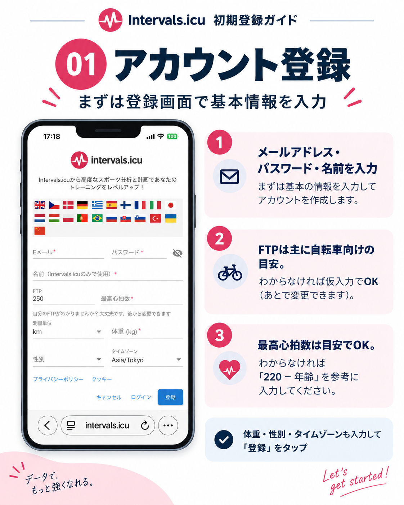
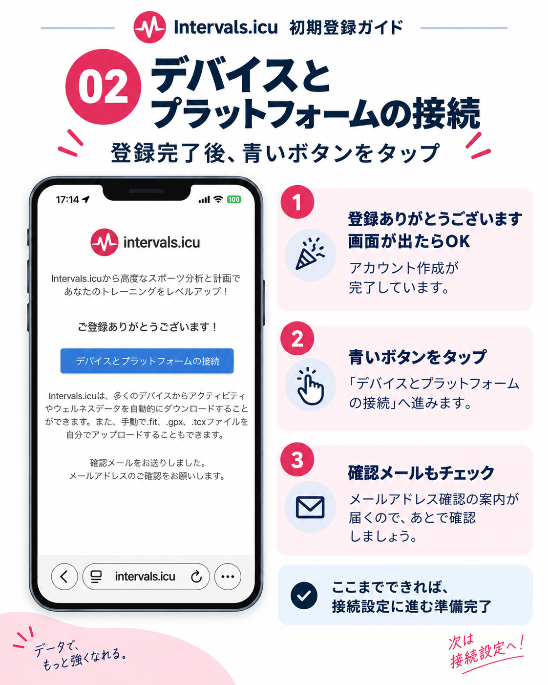
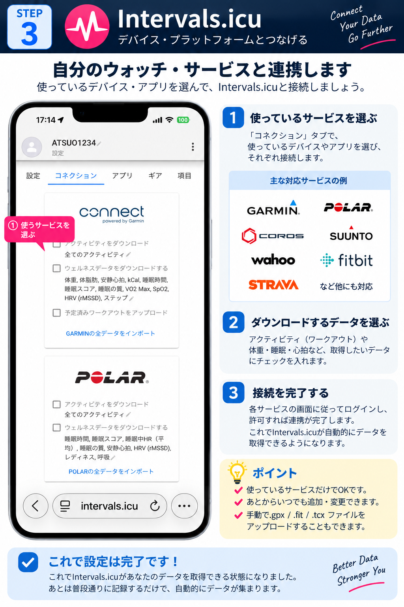

Runner's Rings 使い方
Runner's Ringsをはじめるところから、ランニングデータの取り込み、地図の見方、過去データの追加まで順番に案内します。
1. Runner's Ringsをはじめる
Runner's Ringsは、走った道や街を地図に積み重ねていくランニングWEBアプリです。
日本だけでなく、海外のランニングデータも地図に表示できます。
距離・ラン数・地図は、登録した本人だけに表示されます。シェアするかどうかは自分で選べます。
2. 新規登録する
はじめて利用する場合は、メールアドレスとパスワードを入力して新規登録します。

パスワードは6文字以上で設定してください。
新規登録後、Supabase Authから確認メールが届きます。メール内の「Confirm email address」をタップすると登録が完了します。
登録が完了したら、Runner's Ringsに戻ってログインします。
3. ランニングデータを取り込む
Runner's Ringsでは、使っているウォッチのメーカーではなく、データの取り込み方法から選べます。
StravaとIntervals.icuは、基本的にどちらか一方を選んで連携してください。両方を使うと同じランを重複して取り込む可能性があります。
Strava経由：自動連携
Runner's Ringsは、Stravaに保存されているランニングデータを読み込み、これまで走った道を地図に残します。
一度Stravaと連携すると、過去のランニングデータを取り込めるほか、その後のランも自動でRunner's Ringsに反映されます。
現在、Stravaの利用枠拡大を申請・審査中です。利用できる人数に上限があるため、状況によっては新しく連携できない場合があります。
ログイン後、「Connect with Strava」ボタンからStravaと連携します。


連携が完了すると、Runner's RingsがStravaのランニングデータを読み込みます。
対象は Run / Trail Run / Virtual Run です。
Stravaでスタート地点やゴール地点を非表示にしている場合、Runner's Ringsに取り込まれるルートも一部省略されることがあります。
そのため、実際に走った道とRunner's Rings上の地図が完全には一致しない場合があります。
走ったルートをできるだけ正確に残したい場合は、Strava側の地図表示・プライバシー設定をご確認ください。
Intervals.icu経由：自動連携
Intervals.icuは、さまざまなウォッチやサービスのランニングデータをまとめて扱えるトレーニングプラットフォームです。
最初の登録や接続には少し手順がありますが、複数メーカーのウォッチやサービスに対応しやすいことが大きな特徴です。
Intervals.icuにランニングデータが入る環境を作ったあと、Runner's Ringsの「Intervalsと連携」から接続すると、自動連携でランニングデータを取り込めます。
Intervals.icu 初期登録＋データ連携ガイド



COROSから直接：手動取り込み
COROSのランニングデータは、Runner's Ringsの「COROSから取り込む」から手動で取り込めます。
自動連携ではないため、新しいランを追加したいときに取り込み操作を行ってください。
FIT・GPX・ZIP：ファイル取り込み
FIT・GPX・ZIPファイルを使って、過去のランニングデータや他サービスから書き出したデータを追加できます。
複数ファイルやZIPの一括取り込みにも対応しています。詳しい手順はこのページの「6. FIT・GPX・ZIPをまとめて追加する」「7. GPX／FITファイルを個別に追加する」をご確認ください。
4. 地図を見る
走ったルートやエリアが、Runner's Ringsの地図に表示されます。

地図を拡大すると実際に走ったルートを確認でき、縮小すると市町村ごとの走行状況を確認できます。
年を選択すると、その年に走ったデータだけを表示できます。
5. ホーム画面に追加する
iPhone
SafariでRunner's Ringsを開き、共有ボタンから「ホーム画面に追加」を選びます。
「Webアプリとして開く」は、URL確認や共有をよく使う場合はOFFがおすすめです。

Android
ChromeでRunner's Ringsを開き、右上のメニューから「ホーム画面に追加」または「アプリをインストール」を選びます。

6. FIT・GPX・ZIPをまとめて追加する
過去のランニングデータは、FIT・GPX・ZIPファイルからRunner's Ringsに追加できます。Garminなどから書き出したZIPファイルも、解凍せずそのまま確認・保存できます。
データ量が多いZIPの一括取り込みは、パソコンでの操作をおすすめします。ZIPとGPX／FITは同時に選択せず、分けて追加してください。
Runner's Ringsへ追加する
- Runner's Ringsを開き、ログインします。
- 「＋ランを追加」を押します。
- 追加したいZIP、GPX、FITファイルを選択します。
- ZIPを選んだ場合は、ZIP内の確認が終わるまで画面を閉じずに待ちます。
- ラン＋GPS候補、既存ランとの重複、未登録候補、保存予定件数を確認します。
- 確認画面で「保存処理へ進みますか？」を選びます。
- 誤操作防止のため、画面に表示された「○件保存」を入力します。
- 保存成功・スキップ・失敗の件数を確認します。
ZIPの中にさらにZIPがある場合も、Runner's Ringsが内側まで自動で確認します。
既存のクラウドランと同じ記録は重複として除外され、新しいランだけが保存対象になります。
誤操作などによる短い記録を避けるため、500m未満の候補は自動保存されません。
保存前に未登録候補一覧のテキストファイルが作成された場合は、内容確認のため保管してください。
7. GPX／FITファイルを個別に追加する
自動連携に含まれていないランニングデータは、GPX／FITファイルを使ってRunner's Ringsに追加できます。
「＋ランを追加」を押し、サービスや端末から書き出したGPX／FITファイルを選択してください。複数ファイルもまとめて選択できます。
取り込んだランはクラウドに保存され、次回以降もRunner's Ringsの地図に表示されます。
すでに同じランが存在する場合は、重複しないように同一ランとして判定します。
8. Strava／Intervals.icu／COROS連携を解除する
Strava、Intervals.icu、COROSとの連携を解除したい場合は、アカウント設定を開き、それぞれの「連携を解除」ボタンから解除できます。
連携を解除しても、これまでRunner's Ringsに保存されたランニングデータは削除されません。
再び連携したい場合は、画面上部の各サービスの連携ボタンから再連携できます。
9. 困ったとき
パスワードを忘れた場合
ログイン画面にメールアドレスを入力し、「パスワードを忘れた方」を押してください。
届いたメール内のリンクを開くと、アカウント設定が表示されます。「パスワードを変更」に新しいパスワードを入力し、「変更を保存」を押してください。
最新のデータが表示されない場合は、ブラウザでRunner's Ringsを開き直してから、もう一度確認してください。
自動連携したランがすぐに反映されない場合は、少し時間をおいてから再度確認してください。
それでも解決しない場合は、お問い合わせページからご連絡ください。